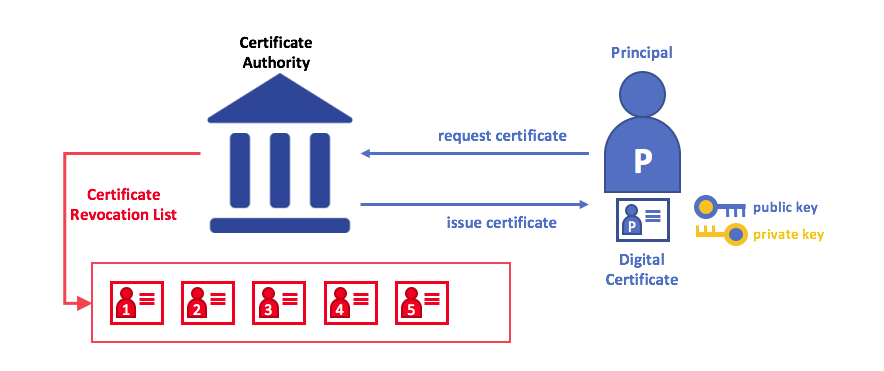

Identity¶
What is an Identity?¶
区块链网络中的不同参与者包括peer、排序器、客户端应用程序、管理员等等。这些参与者中的每一个——能够消费服务的网络内外的活动元素——都有一个封装在X.509数字证书中的数字身份。这些身份非常重要，因为它们决定了参与者在区块链网络中对资源的确切权限和对信息的访问权限。
此外，数字身份还具有一些额外的属性，Fabric使用这些属性来确定权限，并为身份和相关属性的联合提供了一个特殊的名称——主体。主体与userid或groupid类似，但是更加灵活，因为它们可以包含参与者身份的广泛属性，比如参与者的组织、组织单元、角色，甚至参与者的特定身份。当我们讨论主体时，它们是决定其权限的属性。
要使身份可验证，它必须来自可信的权威。成员服务提供者(MSP)在Fabric中实现了这一点。更具体地说，MSP是一个组件，它定义了管理组织的有效身份的规则。Fabric中的默认MSP实现使用X.509证书作为身份，采用传统公钥基础设施(PKI)层次模型(稍后将详细介绍PKI)。
A Simple Scenario to Explain the Use of an Identity¶
假设你去超市买一些杂货。在收银台，你会看到一个牌子，上面写着只接受Visa、万事达卡和美国运通卡。如果你想用另一张卡支付——我们称之为“ImagineCard”——不管这张卡是否真实，你的账户里是否有足够的资金。我们不会接受的。
 Scenario
Scenario
拥有一张有效的信用卡是不够的——它还必须被商店接受!PKIs和MSP以相同的方式协同工作——PKI提供了一个身份列表，MSP表示这些身份中哪些是参与网络的给定组织的成员。
PKI证书颁发机构和MSP提供了类似的功能组合。PKI就像一个卡提供商——它提供许多不同类型的可验证身份。另一方面，MSP类似于商店接受的卡片提供者列表，确定哪些身份是商店支付网络的可信成员(参与者)。MSP将可验证的身份转换为区块链网络的成员。
让我们更详细地研究一下这些概念。
What are PKIs?¶
公钥基础设施(PKI)是一组互联网技术，它在网络中提供安全的通信。将S放入HTTPS的是PKI——如果您在web浏览器上阅读本文，您可能正在使用PKI来确保它来自经过验证的源。
PKI
公钥基础设施(PKI)的元素。PKI由证书颁发机构组成，这些证书颁发机构向各方(例如服务的用户、服务提供者)颁发数字证书，然后在与环境交换的消息中使用这些证书对自己进行身份验证。CA的证书撤销列表(CRL)构成不再有效的证书的引用。撤销证书的原因有很多。例如，因为与证书关联的加密私有材料已被公开，证书可能会被吊销。
虽然区块链网络不仅仅是一个通信网络，它还依赖PKI标准来确保各个网络参与者之间的安全通信，并确保在区块链上发布的消息得到正确的身份验证。因此，了解PKI的基础知识以及为什么MSP如此重要是很重要的。
PKI有四个要素:
Digital Certificates
Public and Private Keys
Certificate Authorities
Certificate Revocation Lists
让我们快速描述一下这些PKI基础知识，如果您想了解更多细节，可以从Wikipedia开始。
Digital Certificates¶
数字证书是包含一组与证书持有者相关的属性的文档。最常见的证书类型是符合X.509标准的证书，该标准允许在其结构中编码某参与方的身份细节。
例如，密歇根州底特律市Mitchell Cars公司制造部门的玛丽莫里斯可能拥有一个SUBJECT 属性为C=US, ST=Michigan, L=Detroit, O=Mitchell Cars, OU=Manufacturing, CN=Mary Morris /UID=123456的数字证书。玛丽的证件类似于她的政府身份证——它提供了有关玛丽的信息，她可以用这些信息来证明有关她的关键事实。在X.509证书中还有许多其他属性，但是现在让我们只关注这些属性。
 DigitalCertificate
DigitalCertificate
描述一个叫玛丽·莫里斯的参与方的数字证书。玛丽是证书的SUBJECT(主题)，突出显示的主题文本显示了关于玛丽的关键事实。如您所见，证书还包含更多的信息。最重要的是，玛丽的公钥分布在她的证书中，而她的私钥没有。此签名密钥必须保持私有。
重要的是，玛丽的所有属性都可以使用一种称为密码学的数学技术(字面意思是“秘密写作”)记录下来，这样篡改会使证书失效。密码学允许玛丽向其他人提供她的证书，以证明她的身份，只要另一方信任证书颁发者，即证书颁发机构(certificate Authority, CA)。只要CA安全地保存某些加密信息(即它自己的私有签名密钥)，任何阅读证书的人都可以确保关于玛丽的信息没有被篡改——它始终具有玛丽莫里斯的那些特定属性。将玛丽的X.509证书看作是无法更改的数字身份证。
Authentication, Public keys, and Private Keys¶
身份验证和消息完整性是安全通信中的重要概念。身份验证要求交换消息的各方确信创建特定消息的身份。对于具有“完整性”的消息，意味着在其传输期间没有被修改。例如，您可能希望确保正在与真实的玛丽莫里斯进行通信，而不是与一个模仿者进行通信。或者，如果玛丽给你发了一条信息，你可能想要确保它在传输过程中没有被任何人篡改。
传统的身份验证机制依赖于数字签名，顾名思义，数字签名允许一方对其消息进行数字签名。数字签名还为签名消息的完整性提供了保证。
从技术上讲，数字签名机制要求每一方都持有两个加密连接的密钥:一个公开密钥(广泛可用并充当身份验证锚)和一个私有密钥(用于在消息上生成数字签名)。数字签名消息的接收方可以通过检查附加签名在预期发送方的公钥下是否有效来验证接收到的消息的来源和完整性。
私钥和各自的公钥之间的独特关系是使安全通信成为可能的密码术。密钥之间独特的数学关系使得私钥可以用于对消息生成签名，只有对应的公钥可以匹配该签名，而且只能对同一消息进行签名。
 AuthenticationKeys
AuthenticationKeys
在上面的示例中，玛丽使用她的私钥对消息签名。任何使用公钥查看签名消息的人都可以验证签名。
Certificate Authorities¶
正如您所看到的，参与者或节点能够通过系统信任的权威机构为其颁发的数字身份参与区块链网络。在最常见的情况下，数字身份(或简单的身份)具有加密验证的数字证书的形式，这些证书符合X.509标准，由证书颁发机构(CA)颁发。
CA是互联网安全协议的一个常见部分，您可能听说过一些比较流行的协议:赛门铁克(最初是Verisign)、GeoTrust、DigiCert、GoDaddy和Comodo等等。
 CertificateAuthorities
CertificateAuthorities
证书颁发机构将证书分发给不同的参与者。这些证书由CA进行数字签名，并将参与者与参与者的公钥绑定在一起(还可以选择使用完整的属性列表)。因此，如果信任CA(并且知道它的公钥)，则可以通过验证参与者证书中的CA签名，信任绑定到证书中公钥的特定的参与者和证书包含的属性。
证书可以广泛传播，因为它们既不包含参与者的私钥，也不包含CA的私钥。因此，它们可以用作信任的锚点，用于验证来自不同参与者的消息。
CA也有一个证书，可以广泛使用。这允许给定CA颁发的身份的使用者，通过检查证书只能由相应私钥(CA)的持有者生成来验证它们。
在区块链设置中，希望与网络交互的每个参与者都需要一个身份。在这种情况下，您可能会说可以使用一个或多个CA从数字的角度定义组织的成员。CA为组织的参与者提供了一个可验证的数字身份的基础。
Root CAs, Intermediate CAs and Chains of Trust¶
CA有两种类型:根CA和中间CA。由于根CA(赛门铁克、Geotrust等)必须向互联网用户安全分发数亿个证书，因此将此过程分散到所谓的中间CA是有意义的。这些中间CA的证书由根CA或其他中间机构颁发，允许为链中的任何CA颁发的任何证书建立“信任链”。这种能力来追踪回根CA不仅让CA上规模，同时仍然提供安全的功能——允许使用证书的组织对使用中间CA有信心——它限制了根CA的曝光,如果妥协,会危及整个链的信任。另一方面，如果中间CA受到损害，则会有更小的风险。
 ChainOfTrust
ChainOfTrust
在根CA和一组中间CA之间建立信任链，只要为每个中间CA的证书颁发CA的CA是根CA本身，或者对根CA具有信任链。
当涉及到跨多个组织颁发证书时，中间CA提供了巨大的灵活性，这在经过许可的区块链系统(如Fabric)中非常有用。例如，您将看到不同的组织可能使用不同的根CA，或者使用相同的根CA和不同的中间CA——这确实取决于网络的需要。
Fabric CA¶
这是因为CA非常重要，Fabric提供了一个内置的CA组件，允许您在您形成的区块链网络中创建CA。这个组件——称为Fabric CA，是一个私有根CA提供者，能够管理具有X.509证书的Fabric参与者的数字身份。因为Fabric CA是针对Fabric的根CA需求的自定义CA，所以它本质上不能为浏览器中的常规/自动使用提供SSL证书。但是，由于必须使用一些CA来管理身份(即使在测试环境中)，Fabric CA可以用来提供和管理证书。使用公共/商业根或中间CA来提供标识也是可能的，而且完全合适。
如果您感兴趣，可以在CA文档部分阅读更多关于Fabric CA的内容。
Certificate Revocation Lists¶
证书撤销列表(Certificate Revocation List, CRL)很容易理解——它只是一个引用证书的列表，CA知道这些证书会因为这样或那样的原因被撤销。如果您回想一下商店场景，CRL就像一个被盗信用卡列表。
当第三方想要验证另一方的身份时，它首先检查发出CA的CRL，以确保证书没有被撤销。验证者不需要检查CRL，但是如果他们不检查CRL，他们将冒着接受被盗身份的风险。
 CRL
CRL
使用CRL检查证书是否有效。如果模拟程序试图将一个损坏的数字证书传递给验证方，可以首先根据发出CA的CRL检查它，以确保它不会被列为不再有效。
注意，被撤销的证书与到期的证书非常不同。被撤销的证书还没有过期——按其他任何标准衡量，它们都是完全有效的证书。有关CRL的更深入信息，请单击这里。
现在您已经了解了PKI如何通过信任链提供可验证的身份，下一步是了解如何使用这些身份来表示区块链网络的可信成员。这就是成员服务提供者(MSP)发挥作用的地方——它标识区块链网络中给定组织的成员。
要了解更多关于成员身份的信息，请参阅关于MSP的概念文档。